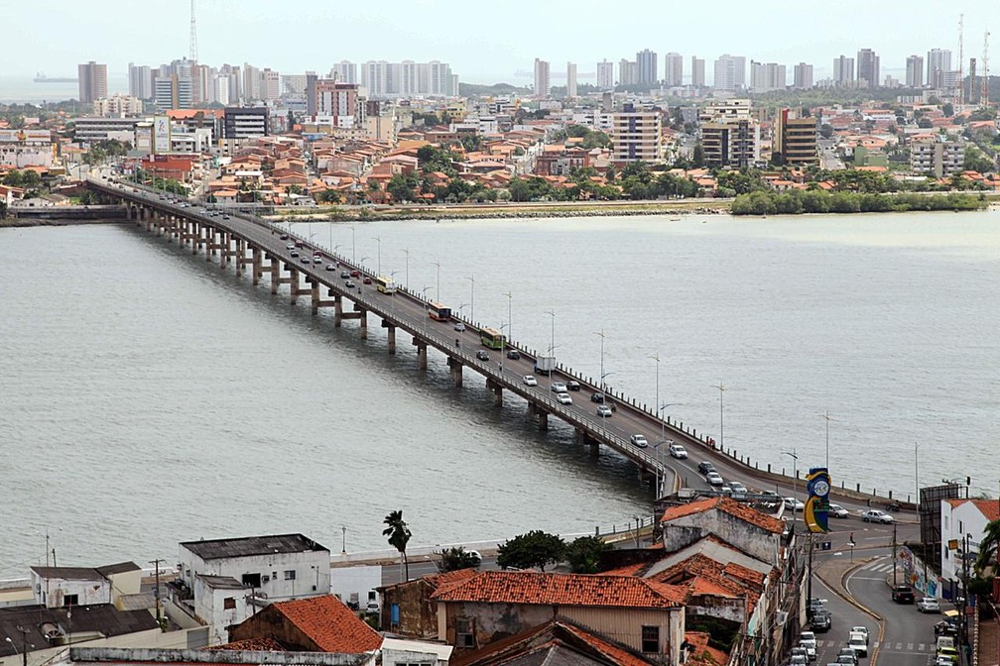

São Luís
Capital, Maranhão
Brasil
Nome
São Luís (frequentemente chamado de São Luís do Maranhão) é um município brasileiro e a capital do estado do Maranhão.
População
Com uma população estimada em 1 108 975 habitantes, São Luís é o município mais populoso do Maranhão e o quarto da Região Nordeste.
Foto

Curiosidades
É a única cidade brasileira fundada por franceses, no dia 8 de setembro de 1612, posteriormente invadida por holandeses e por fim colonizada pelos portugueses. Localiza-se na ilha de Upaon-Açu no Atlântico Sul, entre as baías de São Marcos e São José de Ribamar, no Golfão Maranhense.